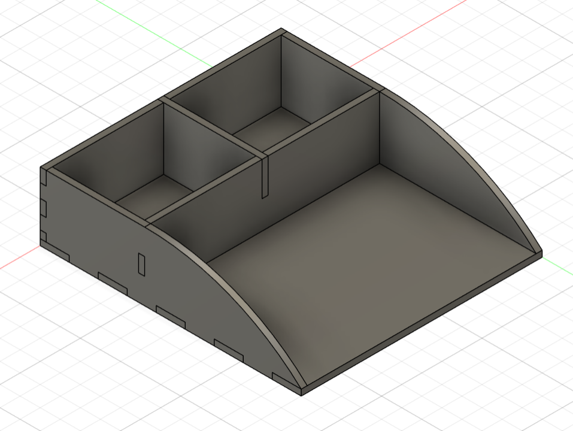

Verkefni 1
Vefsíðugerð
Ég gerði vefsíðu sem inniheldur helstu upplýsingar um mig og verkefnin í námsskeiðinu.
Ég er ljúka BS gráðu í vor í Vélaverkfræði við HÍ. Ég hef mjög mikinn áhuga á tónlist og hef spilað á gítar frá því ég var 8 ára gamall. Einnig hef ég gaman af hreyfingu og útivist.
Ég gerði vefsíðu sem inniheldur helstu upplýsingar um mig og verkefnin í námsskeiðinu.

Gerð límmiða með notkun vínylskera. Parametrísk hönnun og laserskurður á geymsluboxi.

3D prentun vasa með mynstri og 3D skönnun á hlut.

Verður unnið í lok annar.